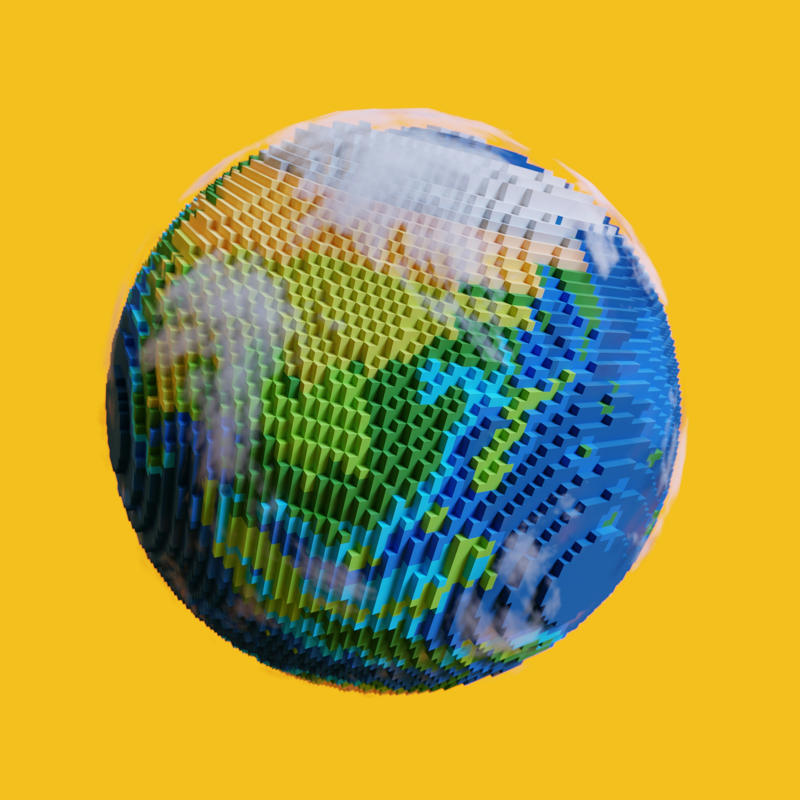
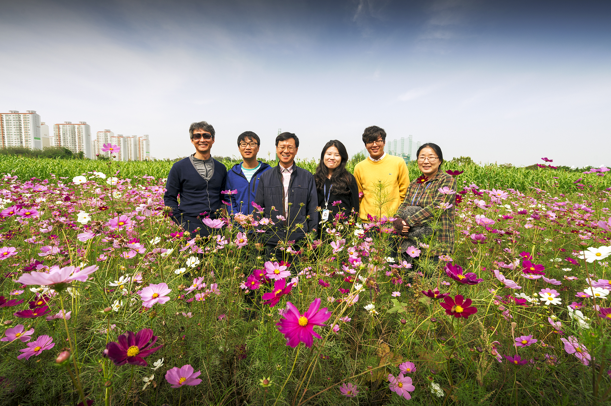
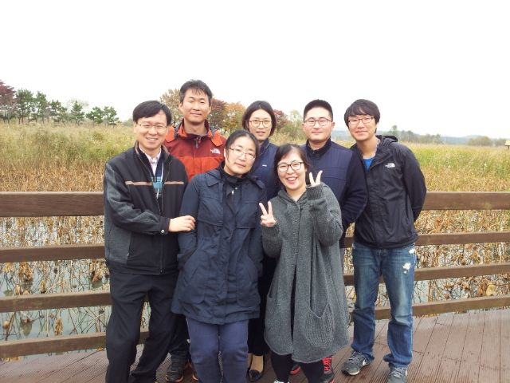
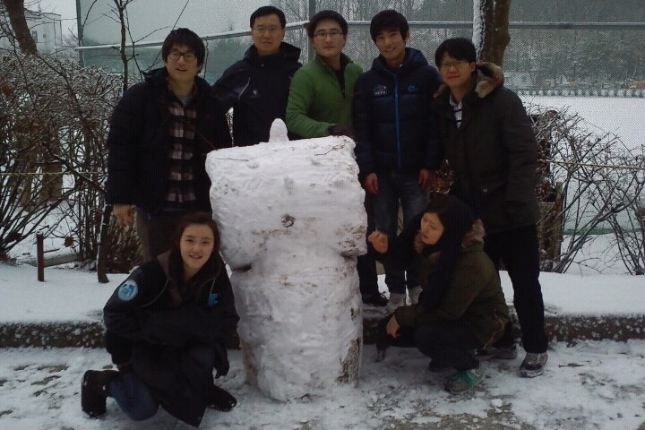
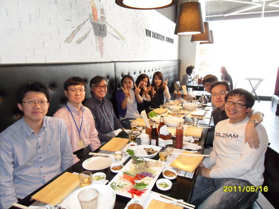

Home

Oceanopia 해양상층역학연구실
Our lab studies the physical characteristics of the surrounding seas of Korea and the global ocean, utilizing in-situ observations and numerical models to reveal the dynamics associated with ocean circulation and climate change, and conducts research to develop and to improve prediction skills for the future changes in the marine environment and climate.
Professor

Chan Joo Jang
Office: KIOST, 385 Haeyang-ro, Yeongdo-gu, Busan, South Korea
Phone: 051-664-3117
Email: cjjang@kiost.ac.kr
Experience
- 2015 - Present: Professor, Korea Institute of Ocean Science and Technology
- 시작기간 - 종료기간: 직책, 기관명
Research Areas

Ocean Climate Change
Perform multifaceted analyses on the impacts of global warming and climate variability on ocean circulation and physical properties, while precisely tracking long-term dynamics and fluctuations in marine environments.

Climate Driven Fisheries
Interpret thermal and ecological migration patterns of fishery resources under climate change using data-driven modeling to research sustainable fishery management strategies.

Ocean Modeling
Establish high-precision future ocean forecasting environments for key parameters, such as sea surface temperature (SST) and dissolved oxygen (DO), leveraging Earth System Models (e.g., CMIP6) and high-resolution numerical models.
Publications
Journal Articles
| Year | Title & Authors | Link |
|---|---|---|
| 2026 | An operational forecast system for the intrusion of the Changjiang River plume into the northern East China Sea Hong, Ji-Seok; Moon, Jae-Hong; Lee, Joon-Ho; Kim, Subin; Kim, Taekyun; Jang, Chan Joo; Jung, Hee Seok |
[Paper Link] |
| 2025 | A dipole pattern bias in marine heatwave simulation around East Asia G. Hong, C. Author |
[Paper Link] |
| 2025 | Assessment of the marine heatwaves prediction performance of the short-term climate prediction system FIO-CPS v2.0 Wang, Yuanlin; Song, Yajuan; Bao, Ying; Jang, Chan Joo; Song, Zhenya |
[Paper Link] |
| 2024 | 전지구모형(CMIP6)에서 전망한 동아시아 해면수온 미래변화 정희석; 정의현; 장찬주 |
[Paper Link] |
| 2024 | Projected changes in seasonal potential distribution of chub mackerel Scomber japonicus under continued ocean warming in Korean waters Bang, Minkyoung; Sohn, Dongwha; Kim, Jung Jin; Choi, Won Keun; Hazen, Elliott Lee; Kang, Sukyung; Kim, Sangil; Jang, Chan Joo |
[Paper Link] |
Conference Papers
| Year | Title & Authors | Link |
|---|---|---|
| 2026 | Recent rapid Intensification of Marine Heatwaves in Korean Waters: Category-Based Spatiotemporal Characteristics Yeo, Jin; Choi, Won Keun; Jang, Chan Joo |
[Proceeding] |
| 2025 | Projected Intensification of Extreme Wave Events in a Boreal Marginal Sea of Northeast Asia under CMIP6 Wind Forcing Yoo, Jeseon; Ahmad, Bayhaqi; Jang, Chan Joo; Son, Dong Hwi; Han, MyeongHee; Bang, Min Seon |
[Proceeding] |
| 2025 | Defining the SCTR depth in the Southwestern Tropical Indian Ocean: Review and Revisit Jang, Chan Joo; Jung, Hee Seok; Azminuddin, Fuad; Mubarrok, Saat; Noh, Suyun; Kang, Dong-Jin |
[Proceeding] |
Members
Researchers
Students

Hoyeon Lee (M.S.)
📧 1209tim@kiost.ac.kr
Jin Yeo (M.S.)
📧 yeojin006@kiost.ac.kr
Alumni
ex) 홍길동 (Ph.D.)
Current: KIOST Senior Researcher
Externs
Seoyoung Hwang
📧 syhwang@kiost.ac.kr
Visitors
ex) 방문자
Visiting Scholar
Gallery

테크노파크 코스모스
2016-10-11

시화호 현장 조사
2014-10-31



눈 온 날 연구실 기록
2012-02-03

연구진 회식
2011-05-16
Contact Us
📍 Location: KIOST, 385 Haeyang-ro, Yeongdo-gu, Busan, South Korea
📧 Email: cjjang@kiost.ac.kr
📞 Phone: 051-664-3117
🕒 Office Hours: Mon - Fri, 09:00 - 18:00